فصل دوم — مبانی تصویر دیجیتال#
این فصل پلی است میان «دنیای فیزیکی» و «آرایهای از اعداد» که در رایانه آن را تصویر مینامیم. اگر فصلهای بعد قرار است درباره بهبود، فیلترکردن، بازیابی، رنگ، تبدیلها یا قطعهبندی صحبت کنند، باید پیش از آن روشن باشد که تصویر چگونه شکل میگیرد، چگونه دیجیتال میشود، پیکسلها چه رابطهای با یکدیگر دارند و چه عملیات ریاضی روی آنها معنیدار است.

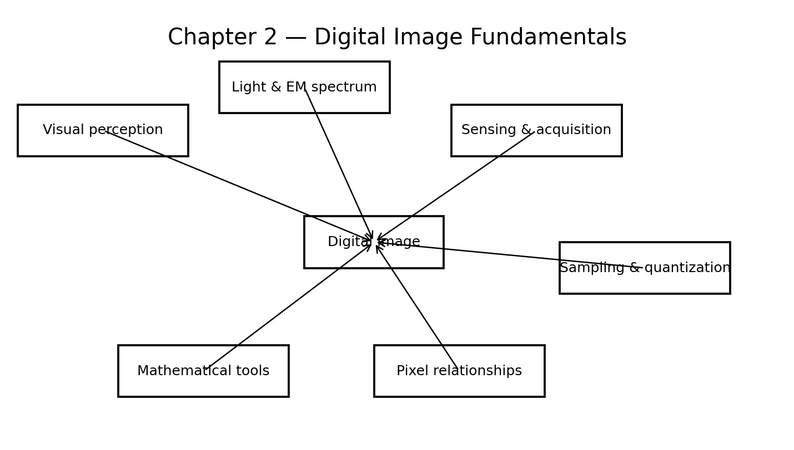
Fig. 1 نقشه مفهومی فصل دوم. همه شکلهای این فصل برای همین بسته آموزشی از نو تولید شدهاند و بازتولید شکلهای کتاب نیستند.#
اهداف یادگیری#
پس از مطالعه این فصل انتظار میرود دانشجو بتواند:
توضیح دهد چشم انسان چگونه تصویر را تشکیل میدهد و چرا ادراک روشنایی صرفاً تابع مقدار فیزیکی شدت نیست؛
ارتباط طول موج، فرکانس و انرژی را با روشهای تصویربرداری توضیح دهد؛
مسیر تبدیل یک صحنه فیزیکی به آرایه دیجیتال را مرحلهبهمرحله بیان کند؛
تفاوت نمونهبرداری و کوانتیزهسازی را دقیقاً تشخیص دهد؛
اثر کاهش تفکیک مکانی و کاهش تعداد سطوح شدت را از هم تفکیک کند؛
مفهوم درونیابی را بفهمد و تفاوت نزدیکترین همسایه، دوخطی و دوبعدی مکعبی را توضیح دهد؛
همسایگیهای 4، قطری و 8، پیوستگی، مسیر، ناحیه و مرز را تعریف کند؛
فاصله اقلیدسی، شهری و شطرنجی را برای پیکسلها محاسبه کند؛
میان عملیات عنصربهعنصر و عملیات ماتریسی تفاوت قائل شود؛
نقش جمع، تفریق، ضرب، تقسیم، عملیات منطقی، تبدیلات هندسی، بردار/ماتریس، تبدیلهای تصویری و احتمال را در فصلهای بعد پیشبینی کند.
2.1 عناصر ادراک بینایی#
2.1.1 چرا با چشم شروع میکنیم؟#
پردازش تصویر رشتهای کاملاً ریاضی است، اما خروجی بسیاری از الگوریتمها در نهایت توسط انسان دیده و ارزیابی میشود. حتی وقتی هدف، ماشینبینی باشد، مفاهیمی مانند «کنتراست»، «وضوح»، «روشنایی»، «جزئیات» و «قابلمشاهده بودن» از محدودیتهای دستگاه تصویربرداری و سامانه بینایی انسان تأثیر میگیرند.
بنابراین لازم نیست زیستشناسی چشم را به تفصیل بخوانیم؛ کافی است چند نکته کلیدی را بدانیم:
چشم یک سامانه اپتیکی-حسی است؛
تصویر روی شبکیه تشکیل میشود؛
گیرندههای نوری دو خانواده اصلی دارند؛
حساسیت چشم به روشنایی و رنگ در همه شرایط یکسان نیست؛
ادراک روشنایی وابسته به محیط اطراف است، نه فقط مقدار عددی یک نقطه.
2.1.2 مدل ساده چشم و تشکیل تصویر#
قرنیه و عدسی نور را میشکنند و تصویر صحنه را روی شبکیه متمرکز میکنند. برخلاف دوربین ساده که اغلب با جابهجایی عدسی نسبت به حسگر فوکوس میکند، در چشم فاصله تقریبی عدسی تا شبکیه ثابت است و شکل عدسی با کمک عضلات مژگانی تغییر میکند.

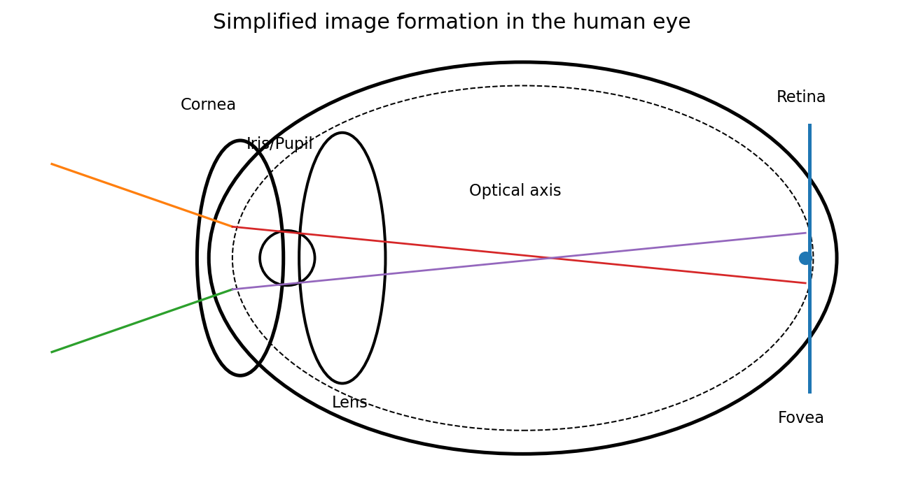
Fig. 2 مدل شماتیک و آموزشی از تشکیل تصویر روی شبکیه. خطوط نور صرفاً برای فهم هندسه رسم شدهاند.#
دو گروه گیرنده مهم شبکیه عبارتاند از:
Cone (مخروطی): بیشتر در ناحیه مرکزی شبکیه، بهویژه نزدیک فووهآ، متمرکز است؛ در روشنایی مناسب و ادراک رنگ و جزئیات ظریف نقش اصلی دارد.
Rod (استوانهای): تعداد بیشتری دارد و در نواحی وسیعتری از شبکیه توزیع شده است؛ در روشنایی کم حساستر است اما تفکیک مکانی و رنگی آن ضعیفتر است.
مثال هندسی ساده: اندازه تصویر روی شبکیه#
اگر شیئی با ارتفاع \(H\) در فاصله \(D\) از چشم قرار داشته باشد و فاصله مؤثر مرکز عدسی تا شبکیه را \(d\) بگیریم، در تقریب دوربین سوراخسوزنی داریم:
پس:
این رابطه یک پیام مهم دارد: اندازه تصویر روی حسگر یا شبکیه فقط به اندازه واقعی جسم وابسته نیست؛ فاصله و هندسه تصویربرداری نیز تعیینکنندهاند. همین ایده بعدها در کالیبراسیون دوربین، دید ماشین و بازسازی سهبعدی ظاهر میشود.
2.1.3 سازگاری روشنایی و تفکیک روشنایی#
چشم میتواند در دامنه بسیار وسیعی از روشنایی، از محیط بسیار تاریک تا روز روشن، فعالیت کند؛ اما این دامنه عظیم را بهطور همزمان پوشش نمیدهد. چشم سطح کاری خود را با محیط تنظیم میکند. این پدیده را brightness adaptation یا سازگاری روشنایی مینامیم.

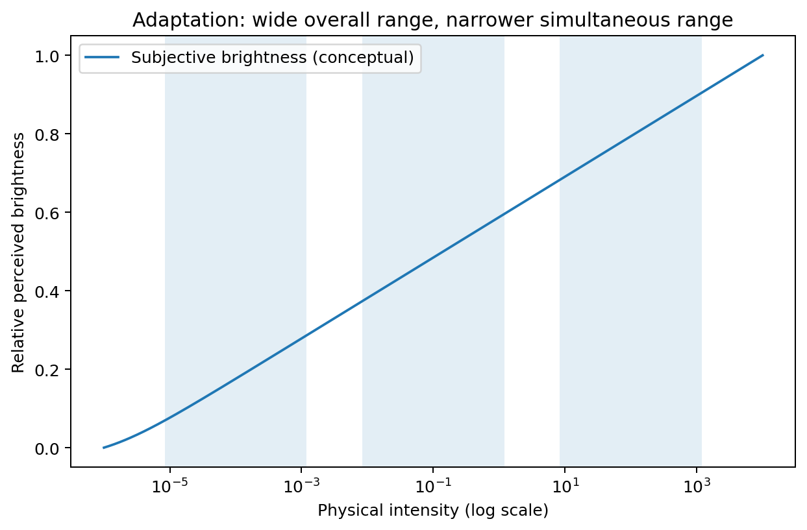
Fig. 3 نمایش مفهومی سازگاری روشنایی: دامنه کلی سازگاری بسیار بزرگ است، ولی در هر سطح تطبیق، دامنه همزمان ادراک محدودتر است.#
برای بررسی توانایی تشخیص اختلاف روشنایی، اگر شدت پسزمینه \(I\) باشد و کوچکترین افزایش قابل تشخیص را \(\Delta I\) بگیریم، کمیت زیر معیار مفیدی است:
این نسبت در بحث کلاسیک تفکیک روشنایی به نسبت وبر معروف است. کوچکتر بودن آن یعنی سامانه بینایی میتواند تغییر کوچکتری را نسبت به سطح زمینه تشخیص دهد.
نکته آموزشی: این مفهوم را با «تعداد بیت تصویر» یکی نگیرید. تعداد بیت ویژگی ذخیرهسازی/نمایش دیجیتال است، ولی نسبت وبر به ویژگی ادراک انسان مربوط است. این دو در طراحی نمایشگر و کنتراست با هم مرتبط میشوند، اما یک چیز نیستند.
2.1.4 روشنایی ادراکشده تابع محیط است#
دو پدیده مهم نشان میدهند که چشم یک شدت عددی را مستقل از اطراف آن نمیبیند:
Mach bands: نزدیک مرز نواحی با تغییر تدریجی شدت، چشم ممکن است نوارهای روشنتر/تیرهتر از مقدار واقعی احساس کند.
Simultaneous contrast: یک مربع خاکستری ثابت روی زمینه تیره روشنتر و روی زمینه روشن تیرهتر به نظر میرسد.
این نکته مستقیماً به پردازش تصویر مربوط است: گاهی دو الگوریتم از نظر خطای عددی مشابهاند، اما یکی از نظر بصری بهتر دیده میشود. بنابراین در کاربرد انسانی، معیار عددی و ارزیابی ادراکی هر دو اهمیت دارند.
2.2 نور و طیف الکترومغناطیسی#
2.2.1 تصویر فقط از نور مرئی ساخته نمیشود#
در زبان روزمره «تصویر» را با آنچه چشم میبیند یکی میگیریم، اما در پردازش تصویر، ورودی میتواند از پرتو گاما، X، فرابنفش، مرئی، فروسرخ، مایکروویو یا رادیویی ساخته شود. حتی روشهایی مانند اولتراسوند و میکروسکوپ الکترونی بیرون از طیف نور مرئی قرار میگیرند.
رابطه پایه موج الکترومغناطیسی:
که در آن:
\(\lambda\) طول موج؛
\(\nu\) فرکانس؛
\(c\) سرعت نور است.
انرژی یک فوتون نیز با فرکانس متناسب است:
و با ترکیب دو رابطه:
بنابراین طول موج کوتاهتر معمولاً به انرژی فوتون بیشتر مربوط است.

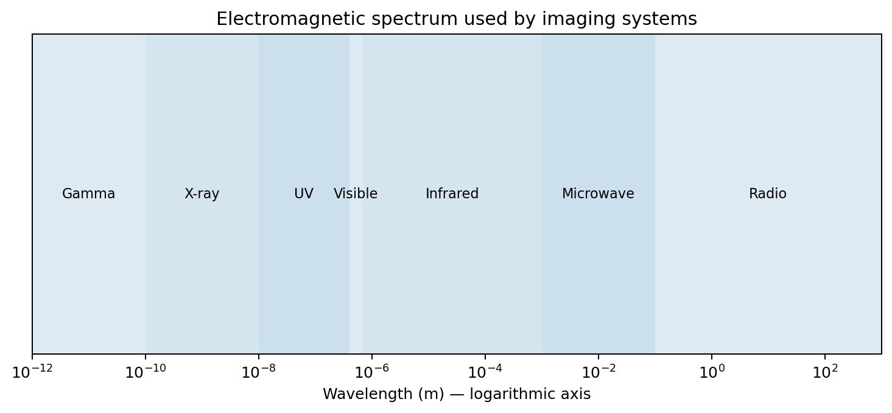
Fig. 4 طیف الکترومغناطیسی در مقیاس لگاریتمی طول موج و ناحیههای متداول تصویربرداری.#
2.2.2 چرا طول موج مهم است؟#
طول موج تعیین میکند انرژی چگونه با ماده برهمکنش کند. بهطور نمونه:
X-ray از بافتها با میزان جذب متفاوت عبور میکند و کنتراست تضعیف ایجاد میشود؛
فروسرخ میتواند اطلاعاتی از دما یا بازتاب در طول موجهای خارج از دید انسان بدهد؛
مایکروویو و رادار در شرایطی میتوانند نسبت به نور مرئی کمتر تحت تأثیر ابر یا تاریکی باشند؛
طول موج مرئی برای تصویربرداری معمول دوربین و میکروسکوپی مهم است.
پس «تصویر» را بهتر است اینگونه تعریف کنیم: نمایش مکانی اندازهگیریشده از یک کمیت فیزیکی، نه صرفاً یک عکس قابل دیدن با چشم.
2.3 حسگری و اکتساب تصویر#
2.3.1 زنجیره اکتساب#
تقریباً هر سامانه تصویربرداری را میتوان به زنجیره زیر تجزیه کرد:
منبع انرژی یا روشنسازی؛
برهمکنش انرژی با صحنه؛
اپتیک یا هندسه جمعآوری؛
حسگر؛
تبدیل سیگنال حسگر به سیگنال قابل نمونهبرداری؛
نمونهبرداری مکانی؛
کوانتیزهسازی شدت؛
تشکیل آرایه دیجیتال.

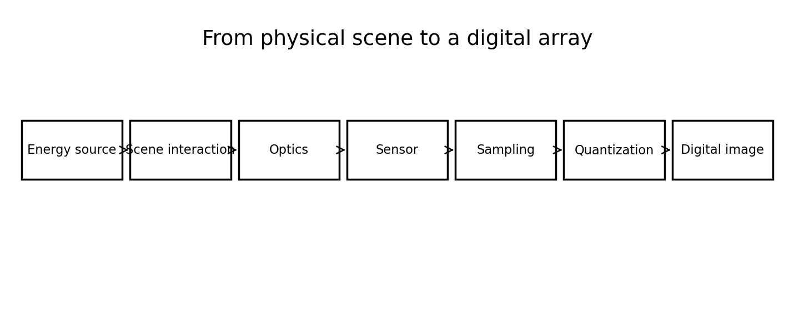
Fig. 5 مسیر مفهومی از صحنه فیزیکی تا تصویر دیجیتال.#
2.3.2 سه آرایش متداول حسگر#
الف) یک حسگر منفرد#
یک عنصر حسگر داریم و برای ساخت تصویر باید صحنه یا حسگر در دو راستا اسکن شود. نمونه کلاسیک آن سامانههایی است که با حرکت مکانیکی یک آشکارساز، ماتریس را سطر به سطر یا مسیر به مسیر میسازند.
ب) نوار یکبعدی حسگرها#
یک ردیف از عناصر حسگر همزمان یک خط را ثبت میکند و با حرکت نسبی در جهت عمود، تصویر دوبعدی ساخته میشود. اسکنرهای خطی و بسیاری از سامانههای تصویربرداری ماهوارهای از این منطق استفاده میکنند.
ج) آرایه دوبعدی#
حسگرهای دوربینهای امروزی معمولاً آرایه \(M\times N\) هستند و هر عنصر بخش کوچکی از میدان دید را نمونهبرداری میکند.

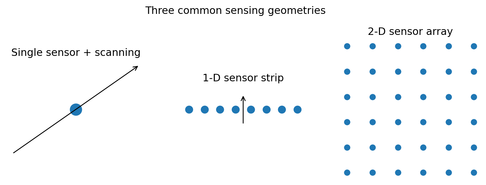
Fig. 6 سه هندسه آموزشی برای حسگر منفرد، نوار خطی و آرایه دوبعدی.#
2.3.3 مدل ساده تشکیل تصویر: روشنسازی × بازتاب#
برای بسیاری از صحنههای بازتابی، یک مدل ساده و بسیار مهم چنین است:
که:
\(i(x,y)\) شدت روشنسازی روی نقطه \((x,y)\)؛
\(r(x,y)\) ضریب بازتاب سطح؛
\(f(x,y)\) شدت ثبتشده است.
بهطور مفهومی:
چرا این مدل مهم است؟#
اگر در یک تصویر سایه میبینید، لزوماً جسم تیره نیست؛ ممکن است \(i(x,y)\) کم شده باشد. اگر جسمی سفید در نور کم ثبت شود، مقدار \(f\) میتواند شبیه جسم خاکستری در نور زیاد باشد. همین تفکیک میان illumination و reflectance پایه روشهایی مانند فیلتر همومورفیک در فصلهای بعد است.
مثال#
فرض کنید دو نقطه داریم:
نقطه A: \(i=100\) و \(r=0.8\)، پس \(f=80\)؛
نقطه B: \(i=200\) و \(r=0.4\)، پس باز هم \(f=80\).
دوربین فقط مقدار نهایی 80 را میبیند. بدون اطلاعات بیشتر نمیتوان فهمید کدام نقطه «واقعاً» بازتاب بیشتری داشته است.
2.4 نمونهبرداری و کوانتیزهسازی تصویر#
این بخش هسته واقعی دیجیتالشدن تصویر است.
2.4.1 تفاوت اصلی نمونهبرداری و کوانتیزهسازی#
اگر تابع پیوسته \(f(x,y)\) را در نظر بگیریم:
Sampling محورهای مکانی \(x,y\) را گسسته میکند؛ یعنی مشخص میکند در چه نقاطی مقدار را بخوانیم.
Quantization مقدار شدت را گسسته میکند؛ یعنی مشخص میکند مقدار اندازهگیریشده به کدام سطح مجاز نگاشت شود.

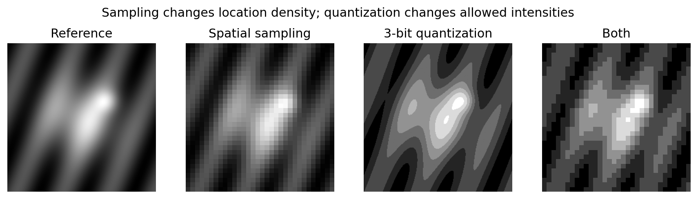
Fig. 7 نمونهبرداری و کوانتیزهسازی دو عمل متفاوتاند: اولی تعداد مکانهای اندازهگیری را تغییر میدهد و دومی تعداد شدتهای مجاز را.#
2.4.2 نمایش ماتریسی تصویر دیجیتال#
یک تصویر دیجیتال خاکستری معمولاً به شکل آرایه زیر نمایش داده میشود:
در این نمایش:
\(M\) تعداد سطرها؛
\(N\) تعداد ستونها؛
هر \(f(x,y)\) مقدار شدت یک پیکسل است.
دقت کنید: در بسیاری از کتابهای ریاضی \(x\) افقی و \(y\) عمودی است، اما در آرایههای برنامهنویسی معمولاً ابتدا شاخص سطر و سپس ستون میآید. در کدنویسی باید قرارداد را روشن نگه دارید تا جابهجایی محور رخ ندهد.
2.4.3 تعداد سطوح شدت#
اگر شدت با \(k\) بیت ذخیره شود، تعداد سطوح ممکن برابر است با:
مثلاً:
1 بیت → 2 سطح؛
2 بیت → 4 سطح؛
8 بیت → 256 سطح؛
12 بیت → 4096 سطح؛
16 بیت → 65536 سطح.
اگر تصویر \(M\times N\) باشد و هر پیکسل \(k\) بیت مصرف کند، حجم خام تصویر خاکستری تقریباً:
است.
مثال حجم#
تصویر \(1024\times1024\) با عمق 8 بیت:
یعنی حدود 1 MiB بدون سربار فایل و بدون فشردهسازی.
2.4.4 شاخص خطی در برابر مختصات دوبعدی#
در حافظه، ماتریس معمولاً بهصورت رشتهای از عناصر ذخیره میشود. اگر قرارداد ذخیرهسازی ستونی/ردیفی مشخص باشد، میتوان بین شاخص خطی و مختصات تبدیل انجام داد. اصل مفهومی مهمتر از فرمول خاص زبان برنامهنویسی است: آرایه دوبعدی در حافظه بالاخره به توالی یکبعدی تبدیل میشود.
در NumPy، آرایهها بهطور پیشفرض با ترتیب C (ردیفمحور) تخت میشوند:
import numpy as np
A = np.arange(12).reshape(3, 4)
v = A.ravel(order="C")
پس هنگام مقایسه فرمولهای کتاب با MATLAB یا NumPy باید به قرارداد index توجه کرد.
2.4.5 تفکیک مکانی و تفکیک شدت#
Spatial resolution پاسخ میدهد: چند نمونه مکانی داریم و کوچکترین ساختار قابل نمایش چقدر است؟
Intensity resolution پاسخ میدهد: چند سطح شدت قابل نمایش داریم و کوچکترین تغییر شدت دیجیتال چقدر است؟

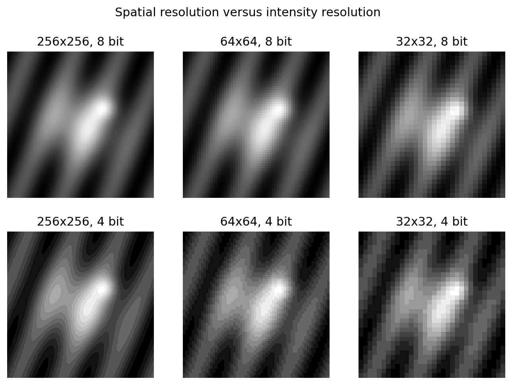
Fig. 8 کاهش تفکیک مکانی و کاهش عمق بیت اثرهای بصری متفاوتی دارند. کاهش نمونهها موجب پیکسلیشدن و از دست رفتن جزئیات مکانی میشود؛ کاهش بیت موجب نوارهای شدت و contouring میشود.#
دو خطای رایج#
بزرگکردن تصویر مساوی افزایش تفکیک واقعی نیست. اگر تصویر 32×32 را به 512×512 تبدیل کنیم، تعداد پیکسل خروجی بیشتر میشود، ولی اطلاعات جدید فیزیکی ایجاد نشده است.
افزایش بیت همیشه کیفیت را بهتر نمیکند. اگر حسگر نویزی یا دامنه مؤثر محدود باشد، ذخیره 16 بیت الزاماً 16 بیت اطلاعات مفید تولید نمیکند.
2.4.6 درونیابی تصویر#
وقتی اندازه تصویر را تغییر میدهیم یا تبدیل هندسی انجام میدهیم، مختصات مقصد غالباً دقیقاً روی مختصات پیکسلهای ورودی نمیافتند. باید مقدار شدت نقاط جدید را تخمین بزنیم.
سه روش متداول:
نزدیکترین همسایه#
سادهترین روش؛ مقدار نزدیکترین پیکسل انتخاب میشود.
مزایا:
سریع؛
برای ماسکهای برچسبدار و تصاویر segmentation مناسب، چون کلاس جدید نمیسازد.
معایب:
لبههای پلهای و ظاهر بلوکی.
درونیابی دوخطی#
چهار همسایه نزدیک در شبکه دوبعدی با وزن وابسته به فاصله ترکیب میشوند. اگر نقطه بین \((x_0,y_0)\) و \((x_1,y_1)\) باشد، میتوان ابتدا در راستای x و سپس y درونیابی خطی انجام داد.
درونیابی bicubic#
از همسایگی بزرگتری استفاده میکند و معمولاً خروجی نرمتر دارد، ولی هزینه محاسباتی بیشتر است و ممکن است overshoot جزئی ایجاد کند.

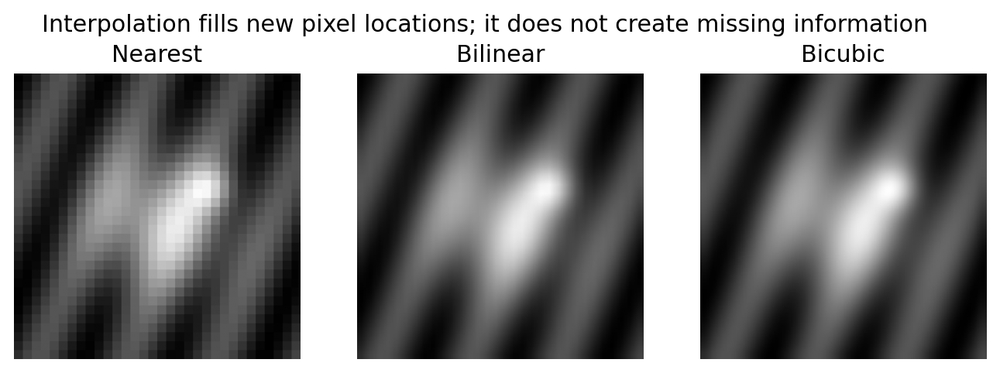
Fig. 9 سه روش درونیابی روی یک تصویر کمنمونه. درونیابی ظاهر را بهبود میدهد، اما اطلاعاتی را که هنگام نمونهبرداری از بین رفته است واقعاً بازنمیگرداند.#
الگوریتم عمومی تغییر اندازه#
اندازه مقصد را تعیین کن؛
برای هر پیکسل مقصد، مختصات متناظر در تصویر مبدا را محاسبه کن؛
اگر مختصات صحیح نبود، از روش interpolation مقدار را بساز؛
مقدار را در مقصد ذخیره کن؛
نوع داده و محدوده شدت را کنترل کن.
مثال کد کوتاه#
from PIL import Image
im = Image.open("input.png").convert("L")
nearest = im.resize((512, 512), Image.Resampling.NEAREST)
bilinear = im.resize((512, 512), Image.Resampling.BILINEAR)
bicubic = im.resize((512, 512), Image.Resampling.BICUBIC)
2.5 روابط پایه بین پیکسلها#
بسیاری از الگوریتمهای فصلهای بعد بر یک سؤال ساده بنا میشوند: «پیکسلهای اطراف این نقطه کداماند؟»
2.5.1 همسایههای یک پیکسل#
برای پیکسل \(p=(x,y)\):
همسایگی چهارگانه:
همسایههای قطری:
و همسایگی هشتگانه:

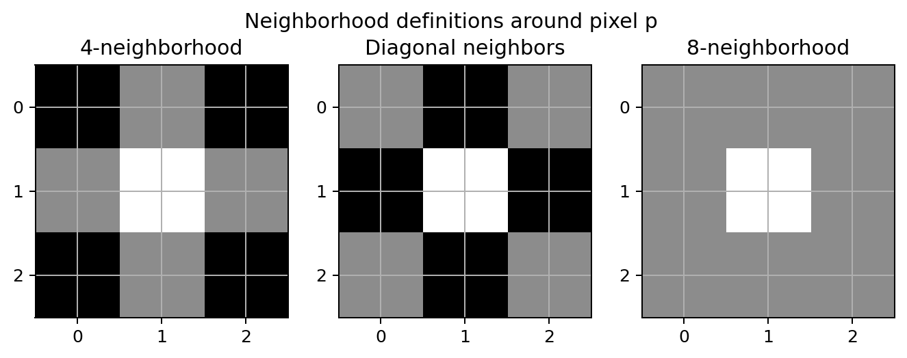
Fig. 10 تعریف تصویری همسایههای 4، قطری و 8 پیرامون پیکسل مرکزی.#
2.5.2 مجاورت با قید مقدار#
در تصویر دودویی، صرفاً نزدیک بودن هندسی کافی نیست. اگر مجموعه مقادیر مورد نظر را \(V\) بنامیم، مثلاً \(V=\{1\}\) برای foreground، دو پیکسل فقط زمانی adjacent محسوب میشوند که هم شرط مکانی و هم شرط عضویت مقدار برقرار باشد.
سه تعریف مهم:
4-adjacency: فقط همسایههای \(N_4\)؛
8-adjacency: هر عضو \(N_8\)؛
m-adjacency: تعریف اصلاحشدهای برای کاهش ابهام اتصالات قطری.
چرا m-adjacency لازم شد؟#
در 8-adjacency ممکن است یک ساختار قطری چند مسیر همارز و مبهم ایجاد کند. m-adjacency اجازه اتصال قطری را فقط وقتی میدهد که همسایههای 4 مشترکِ دو پیکسل عضو مجموعه مورد نظر نباشند.

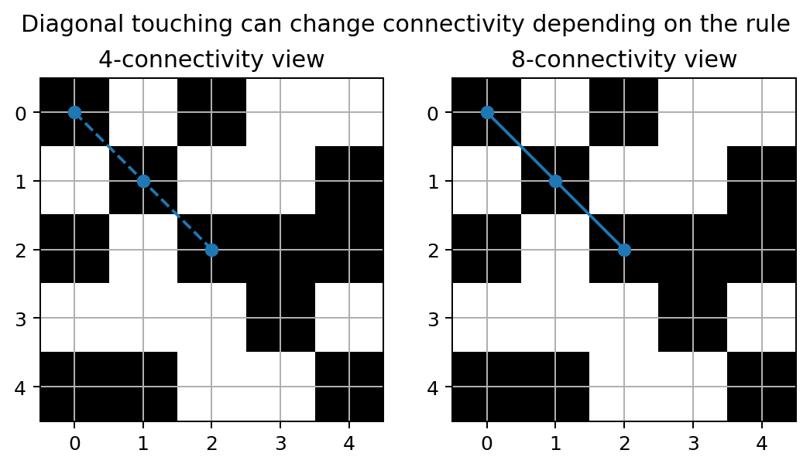
Fig. 11 اتصال قطری میتواند نتیجه شمارش مؤلفههای متصل را تغییر دهد؛ بنابراین نوع adjacency باید همیشه مشخص شود.#
2.5.3 مسیر و مؤلفه متصل#
یک مسیر دیجیتال از \(p\) به \(q\) دنبالهای از پیکسلهای متمایز است که هر دو عضو متوالی نسبت به تعریف انتخابشده مجاور باشند.
اگر تمام پیکسلهای یک زیرمجموعه از طریق چنین مسیرهایی به هم برسند، یک connected component داریم.
این تعریف بعدها در:
labeling اجسام؛
حذف نواحی کوچک؛
شمارش ذرات؛
region growing؛
morphology؛
segmentation؛
بهطور مستقیم استفاده میشود.
2.5.4 ناحیه، مرز و لبه#
Region: مجموعهای متصل از پیکسلها؛
Boundary: پیکسلهایی از ناحیه که همسایهای خارج از ناحیه دارند؛
Edge: مفهومی محلی مبتنی بر تغییر شدت، معمولاً پاسخ مشتق یا گرادیان.
مرز و لبه یکی نیستند. مرز یک مفهوم ساختاری/ناحیهای است؛ لبه از تغییر محلی شدت به دست میآید. در تصویر دودویی ایدهآل ممکن است آنها منطبق شوند، اما در تصویر خاکستری الزاماً نه.
2.5.5 معیارهای فاصله#
برای \(p=(x,y)\) و \(q=(u,v)\):
فاصله اقلیدسی#
فاصله City-block یا \(D_4\)#
فاصله Chessboard یا \(D_8\)#

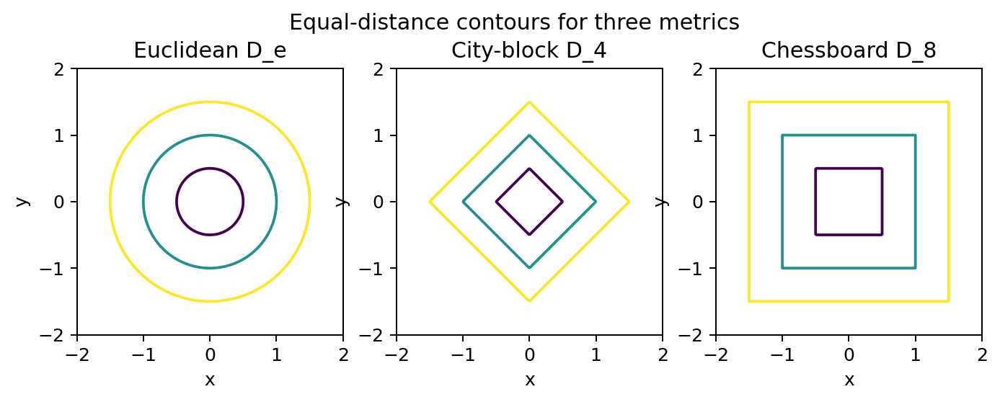
Fig. 12 منحنیهای همفاصله برای سه معیار. اقلیدسی دایره، \(D_4\) لوزی و \(D_8\) مربع ایجاد میکند.#
مثال عددی#
اگر \(p=(2,3)\) و \(q=(7,5)\):
هیچکدام «غلط» نیستند؛ هر کدام هندسه متفاوتی تعریف میکنند و در الگوریتم مناسب خود کاربرد دارند.
2.6 ابزارهای ریاضی پایه در پردازش تصویر#
این بخش مجموعهای از ابزارهاست که در فصلهای بعد بارها ظاهر میشوند. هدف حفظکردن فرمولها نیست؛ باید بفهمیم هر ابزار چه نوع سؤال پردازشی را جواب میدهد.
2.6.1 عملیات عنصربهعنصر در برابر عملیات ماتریسی#
فرض کنید دو تصویر هماندازه \(A\) و \(B\) داریم.
در عملیات elementwise:
هر پیکسل فقط با پیکسل متناظر ترکیب میشود.
اما ضرب ماتریسی:
قانون دیگری دارد و هر عنصر خروجی از ضرب داخلی یک سطر و یک ستون به دست میآید.
در NumPy تفاوت روشن است:
C1 = A * B # elementwise
C2 = A @ B # matrix product
اشتباه گرفتن این دو از رایجترین خطاهای شروع کار با پردازش تصویر است.
2.6.2 خطی و غیرخطی#
عملگر \(\mathcal{H}\) خطی است اگر برای هر \(f_1,f_2\) و ضرایب \(a,b\) داشته باشیم:
مثلاً جمع وزنی و بسیاری از فیلترهای convolution خطیاند. در مقابل، عملگرهایی مانند maximum، median و threshold عموماً غیرخطیاند.
چرا خطی بودن مهم است؟#
خطی بودن اجازه میدهد از اصل برهمنهی، تحلیل سیستمها، پاسخ ضربه، تبدیل فوریه و بسیاری از نتایج نظری استفاده کنیم. این موضوع از فصل 3 و 4 به بعد بسیار مهم میشود.
2.6.3 عملیات حسابی روی تصاویر#
برای دو تصویر هماندازه:
همه اینها در اینجا elementwise هستند.

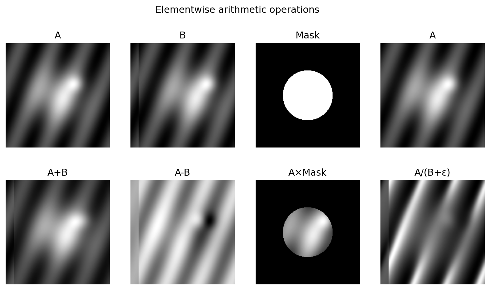
Fig. 13 نمونههای آموزشی از جمع، تفریق، ضرب با ماسک و تقسیم عنصربهعنصر.#
کاربرد جمع#
ترکیب چند تصویر؛
افزایش روشنایی با افزودن bias؛
میانگینگیری چند تصویر نویزی.
اگر:
و نویزها مستقل، میانگین صفر و با واریانس مشابه باشند، میانگین \(K\) تصویر:
به \(f(x,y)\) نزدیکتر میشود و انحراف معیار مؤلفه نویز تقریباً با \(1/\sqrt{K}\) کاهش مییابد.

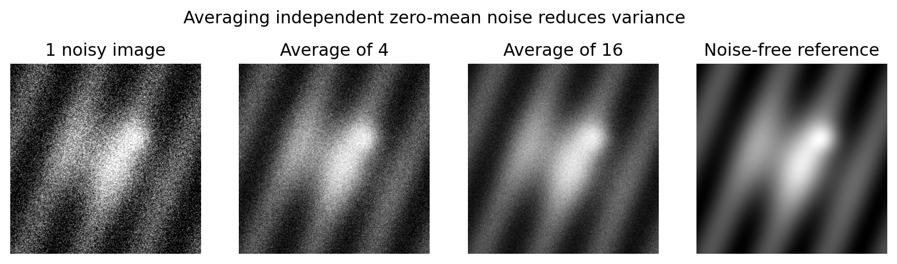
Fig. 14 اثر میانگینگیری چند مشاهده مستقل نویزی. این ایده در تصویربرداری نجومی، پزشکی و low-light کاربرد دارد؛ شرط استقلال/عدم حرکت صحنه مهم است.#
کاربرد تفریق#
آشکارسازی تغییر بین دو زمان؛
digital subtraction angiography؛
حذف پسزمینه ثابت؛
بررسی خطای registration.
کاربرد ضرب#
masking؛
اعمال وزن مکانی؛
windowing؛
ترکیب با نقشه اطمینان.
کاربرد تقسیم#
نرمالسازی؛
تصحیح ناهمگنی روشنسازی یا flat-field؛
نسبتگیری باندها در remote sensing.
هشدار: تقسیم بر اعداد نزدیک صفر باید با \(\varepsilon\) یا ماسک معتبر کنترل شود.
2.6.4 عملیات مجموعهای و منطقی#
در تصاویر دودویی، foreground را میتوان مجموعهای از مختصات در نظر گرفت. عملیات مهم:
اجتماع \(A\cup B\)؛
اشتراک \(A\cap B\)؛
متمم \(A^c\)؛
تفاضل \(A-B\)؛
AND، OR، NOT، XOR.
این ابزارها پایه فصل morphology هستند. مثلاً تقاطع دو ماسک میتواند ناحیهای را نگه دارد که همزمان هر دو شرط را دارد.
2.6.5 عملیات مکانی: تکپیکسلی و همسایگی#
تکپیکسلی#
سادهترین مدل:
یعنی خروجی هر پیکسل فقط به شدت همان پیکسل وابسته است. تبدیل منفی، gamma و threshold که در فصل 3 میآیند از همین خانوادهاند.
همسایگی#
خروجی پیکسل \((x,y)\) از مجموعهای از پیکسلهای اطراف تعیین میشود. مثال ساده، میانگین یک پنجره \(m\times n\):
این فرمول مقدمه مستقیم spatial filtering فصل 3 است.
2.6.6 تبدیلات هندسی و درونیابی شدت#
یک تبدیل هندسی دو مرحله دارد:
تبدیل مختصات؛
تخمین شدت در مختصات جدید.
برای تبدیل خطی دوبعدی:
برای اینکه translation هم در همان قالب قرار گیرد، از مختصات همگن استفاده میکنیم:

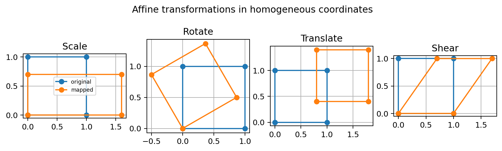
Fig. 15 نمونههای scale، rotation، translation و shear در قالب تبدیل affine.#
Forward mapping و inverse mapping#
در forward mapping هر پیکسل ورودی را به مقصد پرتاب میکنیم. مشکل آن ایجاد حفره یا برخورد چند ورودی با یک مقصد است.
در inverse mapping برای هر پیکسل مقصد میپرسیم «از کجای ورودی آمدهام؟» و سپس interpolation انجام میدهیم. این روش در پیادهسازی تبدیل هندسی معمولاً عملیتر است.
2.6.7 registration و tie point#
در ثبت تصاویر، هدف همتراز کردن دو تصویر از یک صحنه است. اگر چند نقطه متناظر (tie points) داشته باشیم، پارامترهای مدل هندسی را برآورد میکنیم و سپس تصویر متحرک را روی مرجع warp میکنیم.
الگوریتم عمومی:
نقاط متناظر را پیدا کن؛
مدل تبدیل (affine، projective و …) را انتخاب کن؛
پارامترها را از نقاط برازش کن؛
inverse mapping انجام بده؛
interpolation؛
کیفیت همترازی را با اختلاف یا معیار مناسب بسنج.
این ایده در پزشکی، تصاویر ماهوارهای، panorama، change detection و fusion بسیار رایج است.
2.6.8 عملیات برداری و ماتریسی#
یک پیکسل لزوماً یک عدد نیست. در تصویر RGB هر پیکسل یک بردار سهبعدی است. در تصاویر hyperspectral حتی ممکن است صدها مؤلفه داشته باشد.
برای بردارهای \(\mathbf a\) و \(\mathbf b\) ضرب داخلی:
و نرم اقلیدسی:
است.
این ابزارها در اندازهگیری فاصله رنگی، تطبیق، PCA، classification و مدلهای خطی استفاده میشوند.
یک مدل عمومی مشاهده را نیز میتوان چنین نوشت:
که در آن:
\(\mathbf f\) تصویر اصلی برداریشده؛
\(\mathbf H\) عملگر سیستم یا degradation؛
\(\mathbf n\) نویز؛
\(\mathbf g\) مشاهده است.
این رابطه پلی مستقیم به فصل بازیابی تصویر است.
2.6.9 تبدیلهای تصویری#
گاهی پردازش مستقیم پیکسلها بهترین نمایش نیست. تصویر را به حوزه دیگری میبریم:
و با هسته معکوس برمیگردانیم:
هسته تبدیل تعیین میکند چه تبدیلی داریم؛ فوریه، DCT، Haar و تبدیلهای دیگر نمونههایی هستند که در فصلهای بعد میآیند.

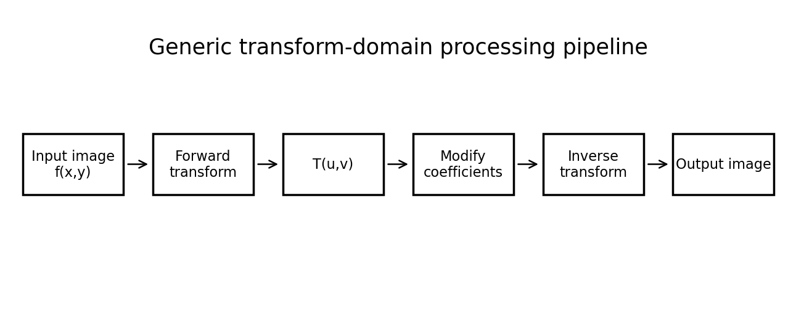
Fig. 16 الگوی عمومی پردازش در حوزه تبدیل: تبدیل مستقیم، اصلاح ضرایب و تبدیل معکوس.#
ایده کلیدی: حوزه تبدیل «جادو» نیست؛ فقط نمایش دیگری از همان اطلاعات است که ممکن است یک مسئله خاص در آن سادهتر شود.
2.6.10 شدت تصویر بهعنوان متغیر تصادفی#
اگر یک پیکسل یا مجموعهای از پیکسلها را بهصورت تصادفی نمونهبرداری کنیم، شدت \(z\) را میتوان یک متغیر تصادفی گسسته دید. اگر شدتهای ممکن \(z_k\) باشند، تخمین احتمال از histogram نرمالشده به دست میآید:
که \(n_k\) تعداد پیکسلهای سطح \(z_k\) است.
میانگین شدت:
و واریانس:
است.

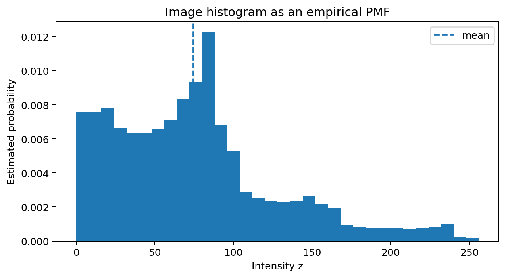
Fig. 17 هیستوگرام نرمالشده را میتوان تخمینی تجربی از توزیع احتمال شدتها دید.#
این نگاه در فصلهای بعد برای نویز، histogram processing، thresholding آماری، مدلهای تصادفی و estimation بسیار مهم خواهد شد.
یک مثال یکپارچه: از صحنه تا عدد#
فرض کنید دوربینی از یک صفحه چاپی عکس میگیرد.
منبع نور محیط صفحه را روشن میکند؛
کاغذ و جوهر ضرایب بازتاب متفاوت دارند؛
عدسی نور بازتابی را روی آرایه حسگر تشکیل میدهد؛
هر photosite انرژی نور را به سیگنال الکتریکی تبدیل میکند؛
شبکه حسگر، نمونهبرداری مکانی را تعیین میکند؛
ADC دامنه سیگنال را به سطوح عددی کوانتیزه میکند؛
آرایهای از اعداد ساخته میشود؛
اگر تصویر resize شود، interpolation لازم است؛
اگر متن استخراج شود، همسایگی و connectivity در segmentation اهمیت پیدا میکند؛
اگر تصویر کج باشد، affine/projective transform برای اصلاح هندسی استفاده میشود؛
اگر نویز وجود داشته باشد، مدل تصادفی و filtering وارد میشود.
این مثال نشان میدهد فصل دوم یک فصل «مقدماتی جداافتاده» نیست؛ تقریباً هر مفهوم آن بعداً دوباره برمیگردد.
الگوریتمهای کوتاه برای تمرین#
الگوریتم 1 — کوانتیزهسازی تصویر خاکستری به \(k\) بیت#
ورودی: تصویر نرمالشده \(f\in[0,1]\) و تعداد بیت \(k\).
\(L=2^k\) را محاسبه کن؛
مقدار هر پیکسل را در \(L-1\) ضرب کن؛
به نزدیکترین عدد صحیح گرد کن؛
دوباره بر \(L-1\) تقسیم کن.
الگوریتم 2 — شمارش مؤلفههای متصل#
یک تصویر دودویی و نوع connectivity انتخاب کن؛
یک پیکسل foreground بدون برچسب پیدا کن؛
با BFS/DFS تمام همسایههای مجاز متصل به آن را پیمایش کن؛
یک برچسب واحد بده؛
تا پایان foreground تکرار کن.
الگوریتم 3 — تبدیل هندسی با inverse mapping#
ماتریس تبدیل \(A\) را بساز؛
\(A^{-1}\) را محاسبه کن؛
برای هر مختصات مقصد \((x',y')\)، مختصات ورودی را از \(A^{-1}\) پیدا کن؛
با bilinear/bicubic شدت را تخمین بزن؛
خروجی را ذخیره کن.
الگوریتم 4 — میانگینگیری چند فریم برای کاهش نویز#
\(K\) فریم همتراز از صحنه ثابت دریافت کن؛
همه را به float تبدیل کن؛
میانگین پیکسلی بگیر؛
محدوده و نوع داده خروجی را بازگردان.
اگر صحنه یا دوربین حرکت کند، ابتدا registration لازم است؛ وگرنه میانگینگیری باعث blur میشود.
آزمایشهای پیشنهادی دانشجو#
آزمایش 1: Sampling در برابر Quantization#
یک تصویر را در دو محور تغییر دهید:
اندازههای 256، 128، 64، 32؛
بیتهای 8، 6، 4، 2، 1.
در هر حالت پاسخ دهید:
چه نوع جزئیاتی از بین میرود؟
آیا اثر کاهش رزولوشن مکانی با کاهش عمق بیت یکی است؟
کدام خطا برای متن، چهره یا تصویر پزشکی مخربتر است؟
آزمایش 2: Interpolation#
یک تصویر کوچک را با nearest، bilinear و bicubic بزرگ کنید. لبه مورب، متن ریز و یک نقطه منفرد را مقایسه کنید.
آزمایش 3: Connectivity#
یک تصویر دودویی بسازید که اجسام فقط از گوشه به هم تماس داشته باشند. تعداد مؤلفهها را در 4-connectivity و 8-connectivity مقایسه کنید.
آزمایش 4: Arithmetic imaging#
دو فریم از یک صحنه بسازید که یک جسم کوچک جابهجا شده است. تفریق تصاویر را محاسبه کنید و ببینید تغییر چگونه برجسته میشود.
پرسشهای مفهومی برای خودآزمایی#
چرا تصویر 1024×1024 با 8 بیت الزاماً از تصویر 512×512 با 12 بیت «بهتر» نیست؟
تفاوت sampling و quantization را بدون استفاده از واژه «دیجیتال» توضیح دهید.
چرا nearest-neighbor برای ماسک کلاسبندی مناسبتر از bicubic است؟
چرا یک جسم با reflectance ثابت ممکن است در نقاط مختلف تصویر شدت متفاوت داشته باشد؟
در چه شرایطی 8-connectivity دو ناحیه را یکی میکند ولی 4-connectivity آنها را جدا میبیند؟
چرا boundary و edge مترادف نیستند؟
برای پیکسلهای \((0,0)\) و \((3,4)\) سه فاصله \(D_e,D_4,D_8\) را حساب کنید.
تفاوت
A*BوA@Bدر NumPy چیست؟چرا averaging چند تصویر نویزی فقط در شرایط خاص نویز را کم میکند؟
چرا inverse mapping در warping معمولاً از forward mapping عملیتر است؟
چرا تبدیل فوریه اطلاعات جدیدی به تصویر اضافه نمیکند، با این حال میتواند پردازش را آسانتر کند؟
چه رابطهای میان histogram و مدل احتمالاتی شدتها وجود دارد؟
جمعبندی فصل#
فصل دوم چارچوب ذهنی پردازش تصویر را میسازد:
ادراک: آنچه میبینیم لزوماً رابطه خطی با شدت فیزیکی ندارد؛
فیزیک: نوع انرژی و برهمکنش آن با ماده منشأ تصویر را تعیین میکند؛
اکتساب: حسگر و هندسه نمونهبرداری صحنه را به سیگنال تبدیل میکنند؛
دیجیتالسازی: sampling مکانها و quantization مقادیر را گسسته میکند؛
رزولوشن: تعداد نمونههای مکانی و تعداد سطوح شدت دو محور مستقل کیفیتاند؛
پیکسلها: همسایگی، connectivity، region، boundary و distance زبان محلی تصویرند؛
ریاضیات: عملیات حسابی، منطقی، مکانی، هندسی، برداری، ماتریسی، تبدیلها و احتمال ابزارهای اصلی فصلهای بعد هستند.
اگر این فصل خوب فهمیده شود، فصلهای بعد دیگر مجموعهای از فرمولهای جداگانه دیده نمیشوند؛ هر الگوریتم را میتوان در یکی از این الگوها جای داد: تغییر شدت، استفاده از همسایگی، تغییر هندسه، تغییر نمایش، یا استنتاج آماری از داده تصویر.
فایلهای همراه برای دانلود#
منبع علمی اصلی#
این فصل با حفظ سازمان مفهومی فصل دوم کتاب زیر و با نگارش مستقل آموزشی تهیه شده است:
R. C. Gonzalez and R. E. Woods, Digital Image Processing, 4th Edition, Pearson, Chapter 2: Digital Image Fundamentals.
شکلهای داخل این بسته بازطراحی/تولید مستقل آموزشی هستند و از شکلهای کتاب کپی نشدهاند.